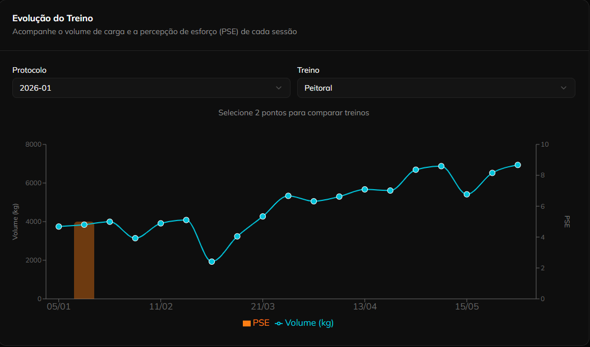

Este modelo é indicado para quem já treina de forma constante há algum tempo, possui técnica e execução bem definidas, já passou pelas correções e domina a base de como fazer progressões. Se você prefere ter ajustes e feedback, a consultoria mensal é a melhor opção.
Você recebe o treino montado para o seu objetivo, em um protocolo fechado de 10 semanas, sem acompanhamento e sem feedback durante o período.
Pagamento único:

Observação: o protocolo de treino tem duração de 10 semanas e, depois, o acesso a ele é encerrado.
Para continuar, é possível contratar um novo protocolo ou migrar para a consultoria mensal.
Para informações sobre disponibilidade ou outras dúvidas, o contato é feito de forma individual.